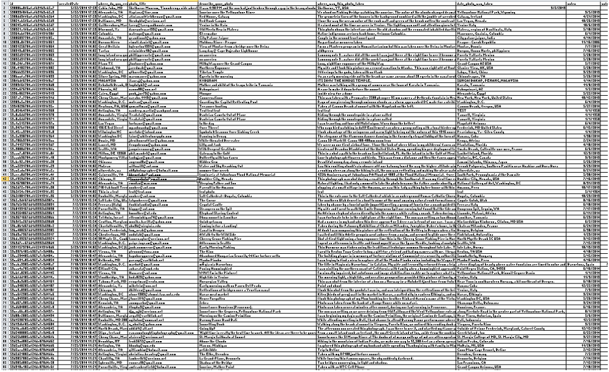

Submission Platform is a dynamic form builder and a submission curation tool customized for the newsroom. Its strength is the curation tool that allows the user to have more control in managing the data.
Imagine this. You're the Travel editor for the Washington Post. One of your responsibilities is to manage and oversee the annual travel photo contest, where readers submit their favorite travel photos. But no one told you about the amount of cumbersome, time-consuming work that was involved.
You have no trouble collecting content but managing it is the pain point. Especially when one is looking at data with images, documents, videos, etc and trying to curate them.
That is just one example of many we saw at The Post where there was a long-running inefficient process that made content collection difficult. So, we created an application called Submission Platform, or as we call it SUB for short. It is a dynamic form builder that lets you collect and manage user submissions of text, images, and other data. It can be used to create forms and collect responses just like Google Forms or any other survey tool.
However, this is where Submission Platform stood out. It makes media viewing a priority so you preview the image, video, etc inline. It also has many flexible options to tag and curate the data as needed such as complex search queries and REST APIs to retrieve the data outside of the tool.
This project provided me the opportunity to work end to end from product design to cloud deployments. Before there was a separation of responsibilities, and now through this project I really grew as a developer from having a specialized role to a full stack understanding of web design.
We had no dedicated design nor product resource. We had a prototype but it was for proof of concept and needed a better design. I researched different administration tool Angular themes, identified a theme, and customized it. It is currently still the base theme for the application. Whenever we determined a feature needed to be added, I would create high fidelity mockups/prototypes.
I took the initiative to go through The Washington Post site and look for sections where I saw a survey or email being used. I would contact them, set up meetings, and speak to them about the benefits of SUB. Then I would set up a form for them and see where they had user experience issues, and then identify and fix them.
At the time, it was built in the MEAN stack - MongoDB, Express.js, Angular, and Node.js which had three major benefits.
This project provided me the opportunity to work end to end from product design to cloud deployments. Before there was a separation of responsibilities, and now through this project I really grew as a developer from having a specialized role to a full stack understanding of web design. With this project, I defined business requirements, created prototypes, made database changes, wrote an API to access that information, display the data in the HTML, and also managed the AWS infrastructure.